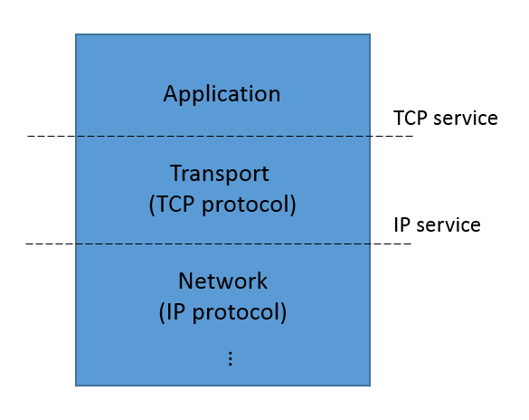

Specifications
Formal verification is primarily about establishing relationships between specifications at differing levels of abstraction.
Consider, for example, a network protocol, such as the TCP protocol that is widely used to communicate streams of data over the Internet. At a high level of abstraction, TCP is a service, providing methods for establishing connections, and sending or receive data. This service provides guarantees to its users of reliable in-order transmission of streams of bytes. At a lower level of abstraction, TCP can be seen as a protocol. The protocol is a set of rules (laid out in RFC 675 and later documents) that implements service guarantees of TCP by exchanging datagrams over an unreliable network.
The service and protocol specifications of TCP are views of the same process observed at different interfaces. That is, TCP is sandwiched between a higher-level application (say, a web browser and web server) and the lower-level datagram protocol (typically the IP protocol) as shown below:

The TCP service specification describes the events we observe at the interface between the application layer and the transport layer. The IP service specification describes the events we observe at the interface between the transport layer and the network layer. The TCP protocol specification describes the relation between events at this interface and the lower-level interface between transport and network layers.
If we were develping the TCP protocol specification, we would like to verify that the IP service and the TCP protocol together implement the TCP service specification. That is, if events at the transport/network interface are consistent with the IP service specification, and if we execute the TCP protocol according to its specification, then events at the application/transport interface should be consistent with the TCP service specification. From the point of view of the TCP protocol, we say that the IP service specification is an assumption, while the TCP service specification is a guarantee.
Ivy has features that allow us to perform this kind of reasoning. It allows us to:
- Define objects with interfaces
- Write specifications about interfaces
- Prove assume/guarantee relationships between these specifications
In Ivy, interfaces and specifications are objects. An interface is object with unimplemented actions (a bit like an instance of an abstract class in C++). A specification is a special object that monitors the calls and returns across an interface.
Monitors as specifications
To specify services such as TCP, we need to make statements about the sequences of events that can occur at an interface. For example, in TCP, we need to make statements relating the sequences of send and receive events to abstract data streams that are transmitted between clients. Specifications about sequences of events in time are often referred to as temporal specifications.
A common approach to tempral specification is to define a specialized logical notation called a temporal logic. These notations make it possible to write succinct temporal specifications, and also us to do some proofs in a fully automated way using model checking.
For reasons we will discuss shortly, Ivy takes a different approach. Temporal specifications in Ivy are defined using special objects called monitors. A monitor is an object that synchronizes its actions with calls and returns across an interface. This allows the monitor to record information about the history of the interface in its local state, and to assert facts that should be true about inteface events based on the history of previous events.
As an example, here is a definition of an interface for a rediculously simple network service:
#lang ivy1.7
type packet
object intf = {
action send(x:packet)
action recv(x:packet)
}
The actions in an interface object don’t have definitions. These will be filled in by other objects that implement the different roles in the interface. We don’t know yet what these objects actually do, but we can write a service specification that tells us something about the temporal behavior at the interface:
specification {
relation sent(X:packet)
after init {
sent(X) := false
}
before intf.send {
sent(x) := true
}
before intf.recv {
require sent(x)
}
}
The specification section contains a monitor. This is imaginary code that is not
normally executed (often referred to as “ghost” code).
The monitor has one local state
component sent that records the set of packets that have been sent
so far. This information is recorded by inserting an action before
every call to intf.send. This is done using a new declaration
before. Notice that the inserted action can refer to the parameters
of intf.send and it can update the monitor state. In addition, the
monitor inserts an assertion before every call to intf.recv. This
assertion is introduced with the require statement. This means that
the calling environment of inft.recv must guarantee that the
condition sent(x) holds before the call to intf.send. That is, the
received packet x must previously have been sent.
In effect, our service specification describes a channel that can re-order and duplicate packets, but cannot corrupt packets. If any corrupted packet is received, the assertion will fail.
Now let’s consider some possible implementations of this very simple specification. Here is the most trivial one:
implementation {
implement intf.send {
call intf.recv(x)
}
}
The implementation section provides the implementation of action intf.send
using a new declaration implement. This declaration provides the
missing body of the action intf.send. The implementation simply calls intf.recv
on the sent packet x. The assertion in the monitor is always
true, since before calling intf.send, the packet x is added to the
relation sent. That is, our implementation trivially satisfies the
specification “receive only sent packets”.
To verify our implementation, we need to put it in a suitable
environment. The following statements tell us that the environment
will implement intf.recv and will call intf.send:
import intf.recv
export intf.send
Now, saving this text in the file trivnet.ivy, we can check that our
“protocol” satisfies its service specification like this:
$ ivy_check trivnet.ivy
Isolate this:
The following action implementations are present:
trivnet.ivy: line 6: implementation of intf.recv
trivnet.ivy: line 28: implementation of intf.send
The following action monitors are present:
trivnet.ivy: line 21: monitor of intf.recv
trivnet.ivy: line 17: monitor of intf.send
The following initializers are present:
trivnet.ivy: line 13: init[after1]
Any assertions in initializers must be checked ... PASS
The following program assertions are treated as guarantees:
in action intf.recv when called from intf.send:
trivnet.ivy: line 21: guarantee ... PASS
OK
For the moment, ignore the mysterious heading ‘Isolate this:’.
Ivy checked that the precondition of intf.recv is true whenever it
is called by intf.send. We don’t even need an inductive invariant in
this case, because the assertion is true when intf.send is executed
in any context.
To get a better idea of what is happening with before and
implements, we can print out the program that results from inserting
the monitor actions and interface implementations:
$ ivy_show trivnet.ivy
type packet
relation sent(V0:packet)
after init {
sent(X) := false
}
action intf.recv(x:packet) = {
assert sent(x)
}
action intf.send(x:packet) = {
{
sent(x) := true;
call intf.recv(x)
}
}
export intf.send
Notice that the before actions of the monitor have been inserted at
the beginning of these actions, and the implement action of
protocol has been used as the body of intf.send. Notice also that
the require statement in the monitor has become assert. This means
that when intf.recv is called by our implementation, we have to
prove that the condition holds.
Of course, we might consider a (slightly) less trivial implementation, such as this one that implements the service specification with a one-place buffer:
implementation {
individual full : bool
individual contents : packet
after init {
full := false;
}
implement intf.send {
full := true;
contents := x
}
action async = {
if full {
full := false;
call intf.recv(contents)
}
}
}
This implementation has an action async that needs to be called by the
environment, so we add:
export async
When async is called, if there is a message in the buffer, the message
is received.
To verify this implementation, we also need one invariant conjecture:
invariant full -> sent(contents)
That is, to show that when async executes, the received packet has
been sent, we need to know that the packet in the buffer has been
sent. The reader might want to try to produce this invariant using the
interactive invariant generation
techniques supported by Ivy.
Assume-Guarantee reasoning in Ivy
In the previous example, we saw that a service specification is a kind of abstraction. It hides details of the underlying imlementation, telling us only what we need to know to use the service. Abstractions are crucial in reasoning about complex systems. They allow us to develop one component of a system without thinking about the details of the implementation of other components. For example, when developing a network application based on TCP, we don’t have to read RFC 675. We just rely on the simple service guarantee that TCP provides (reliable, in-order delivery). The service specification allows us to think about our application in isolation from the network protocol stack.
Ivy provides a mechanism to do just this when proving correctness of system components. That is, we can isolate a single object in our system and prove its correctness using only the service specifications of its interfaces.
As an example, let’s build a system of two components that plays a highly simplified game of ping-pong. Here is the interface definition:
#lang ivy1.5
object intf = {
action ping
action pong
}
Here is the interface specification:
type side_t = {left,right}
specification {
individual side : side_t
after init {
side := left
}
before intf.ping {
require side = left;
side := right
}
before intf.pong {
require side = right;
side := left
}
}
The specification section has a single state component side that keeps track
of whether the ball is on the left- or right-hand side of the
table. When the ball is on the left, a ping action is allowed,
sending the ball to the right-hand side. When the ball is on the
right, a pong is allowed, sending the ball to the left again. A
failure to alternate ping and pong would cause one of the
preconditions to fail.
Now let’s implement the left-hand player:
implementation {
isolate left_player = {
individual ball : bool
after init {
ball := true
}
action hit = {
if ball {
call intf.ping;
ball := false
}
}
implement intf.pong {
ball := true
}
invariant ball -> side = left
} with this
}
The left player is a special kind of object called an isolate. An
isolate is verified in isolation. The player has a Boolean state
variable ball that indicates the ball is in the player’s court. We
assume the left player serves, so ball is initially true. If the
left player has the ball, the hit action will call ping, sending
the ball to the right, and set ball to false. The left player
implements ping by setting ball to true (for the moment, ignore
the invariant, and also the declaration with this).
The right-hand player implementation is similar, except that it
reverses the roles of ping and pong, and initially its ball
variable is false:
implementation {
isolate right_player = {
individual ball : bool
after init {
ball := false
}
action hit = {
if ball {
call intf.pong;
ball := false
}
}
implement intf.ping {
ball := true
}
invariant ball -> side = right
} with this
}
Let’s export the hit actions to the environment, so the players
will do something:
export left_player.hit
export right_player.hit
At this point we could easily enough verify the assertions using the
given invariant conjectures. However, by using isolate declarations,
we separate the reasoning about the left and right players, using the
top-level specification. The top-level program is also an isolate,
called this. Each player isolate draws its assumptions and
guarantees from the the top-level specification. For this reason, each
is given a declaration with this.
We now have two separate proof problems, one for each player isolate. We can see what the left player isolate looks like as follows:
$ ivy_show isolate=left_player pingpong.ivy
type side_t = {left,right}
individual side : {left,right}
relation left_player.ball
invariant [left_player.invar6] left_player.ball -> side = left
after init {
side := left
}
after init {
left_player.ball := true
}
action intf.ping = {
assert side = left;
side := right
}
action left_player.hit = {
if left_player.ball {
call intf.ping;
left_player.ball := false
}
}
action intf.pong = {
{
assume side = right;
side := left;
left_player.ball := true
}
}
export intf.pong
export left_player.hit
Several interesting things have happened here. First, notice the the
action intf.ping. We see that the code inserted by the monitor is
present, but the implementation provided by right_player is missing.
In effect, the right player has been abstracted away: we see neither
its state nor its actions. Further, notice that the action pong has
been exported to the environment. It contains the monitor code from
the top-level specification and also the left player’s implementation of pong. There is a
crucial change, however: the require in the specification of pong
has changed to assume.
This is an example of assume-guarantee reasoning. The left player
guarantees to call ping only when the ball is on the
left. However, it assumes that the right player only calls ping
when the ball is on the right. This is a very common situation in protocols.
Each participant in the protocol guarantees correctness of its outputs,
but only so long as its inputs are correct.
Finally, notice that the isolate contains only the left player’s invariant
conjecture. Using this invariant, we can prove the correctness of ping:
$ ivy_check isolate=left_player pingpong.ivy
Isolate left_player:
...
The following set of external actions must preserve the invariant:
(internal) ext:intf.pong
pingpong.ivy: line 45: left_player.invar6 ... PASS
(internal) ext:left_player.hit
pingpong.ivy: line 45: left_player.invar6 ... PASS
The following program assertions are treated as assumptions:
in action intf.pong when called from the environment:
pingpong.ivy: line 22: assumption
The following program assertions are treated as guarantees:
in action intf.ping when called from left_player.hit:
pingpong.ivy: line 17: guarantee ... PASS
OK
We’ve shown only some interesting parts of Ivy’s ouput. Notice first
that Ivy verifies that the two exported actions of the left player
isolate preserve the invariant conjecture of left_player. These are intf.pong and
left_player.hit. In addition, notice that Ivy treated the
precondition of intf.pong as an assumption, and the precondition
of intf.ping as a guarantee. It checked the guarantee given the
assumption and printed PASS to indicate the the guarantee holds.
Now let’s look at the other isolate:
$ ivy_show isolate=right_player pingpong.ivy
type side_t = {left,right}
individual side : {left,right}
relation right_player.ball
invariant [right_player.invar9] right_player.ball -> side = right
after init {
side := left
}
after init {
right_player.ball := false
}
action intf.pong = {
assert side = right;
side := left
}
action right_player.hit = {
if right_player.ball {
call intf.pong;
right_player.ball := false
}
}
action intf.ping = {
{
assume side = left;
side := right;
right_player.ball := true
}
}
export intf.ping
export right_player.hit
This is similar, but now pong is verified and ping is assumed to be correct.
The state and actions of the left player are compeltely abstracted away.
We can check the whole proof using Ivy like this:
$ ivy_check pingpong.ivy
...
Isolate right_player:
...
The following set of external actions must preserve the invariant:
(internal) ext:intf.ping
pingpong.ivy: line 65: right_player.invar9 ... PASS
(internal) ext:right_player.hit
pingpong.ivy: line 65: right_player.invar9 ... PASS
The following program assertions are treated as assumptions:
in action intf.ping when called from the environment:
pingpong.ivy: line 17: assumption
The following program assertions are treated as guarantees:
in action intf.pong when called from right_player.hit:
pingpong.ivy: line 22: guarantee ... PASS
...
OK
Notice here, the assume/guarantee relation is reversed. We assume the
precondition of intf.ping when proving the precondition of
intf.pong.
Is this really a proof?
In creating the two isolates left_player and right_player, we
reduced a proof goal to two simpler sub-goals. In theorem provers,
this kind of reduction is called a tactic. We must take care that
our tactics are logically sound. That is, is the two sub-goals are
provable, then the original goal must also be provable.
Let’s try informally to justify the soundness of our tactic. Ivy performed two transformations to produce each isolate: it changed some requiremens to assumptions or assertions, and it deleted the code of one of the two players.
Pseudo-circular proofs
At first blush, changing assertions to assumptions seems to be unsound
because of a logical circularity. That is, we assumed ping to prove
pong and pong to prove ping. This apparent circularity is broken
by the fact that when proving ping, we only assume pong has been
correct in the past. When verifying left_player, we show that the
assertion about ping is not the first assertion to fail. When
verifying right_player, we show that the assertion about pong is not the
first assertion to fail. Since no assertion is the first to fail, we
know no assertion ever fails.
Abstraction
In isolating the left player, Ivy deleted all the actions and state components of the right player. This is a form of abstraction known as localization. The idea is that the truth of some assertions does not depend on certain components of the system. But in what cases is this a sound abstraction? That is, when can we infer that an assertion is true from the fact that it is true in the abstracted system? A sufficient condition is that the abstracted actions can have no side effect that is visible to the remaining actions. We will call this condition non-interference.
Ivy uses a fairly simple analysis to check non-interference. As an example, suppose the right player tries to cheat by putting the ball back in the left player’s court without hitting it:
isolate right_player = {
...
implement intf.ping {
left_player.ball := true
}
...
}
Here’s what happens when when we try to verify this version:
ivy_check interference.ivy
Isolate left_player:
interference.ivy: line 30: error: Call out to intf.ping may have visible effect on left_player.ball
Ivy can’t abstract away the right player’s implementation of
intf.ping because of the possible side effect on left_player.ball.
Ivy’s analysis of interference is based only on which state components
are referenced and assigned. It’s easy to construct an example where
two objects share a variable, but do not actually interfere, for
example, because they reference disjoint elements of an array. Ivy
will flag this as an error, since its analysis is not precise enough
to show non-interference. Ivy is designed to reason about objects that
share interfaces, but not variables.
Coverage
To be sound, our tactic must also ensure that every assertion in the
program is verified in some isolate. Ivy checks this for us. Suppose, for example, we remove the
with this declaration from the right_player isolate.
Here is what happens when we try to verify the program:
ivy_check coveragefail.ivy
coveragefail.ivy: line 20: error: assertion is not checked
coveragefail.ivy: line 5: error: ...in action intf.pong
coveragefail.ivy: line 49: error: ...when called from right_player.hit
error: Some assertions are not checked
Ivy is telling us that the precondition of pong assertion isn’t checked, because we
haven’t declared the top-level specification as a dependency of right_player.
The isolate declaration
Now let’s look at the isolate declaration in more detail. Here is the declaration
of the left_player isolate:
isolate left_player = {
...
} with this
This creates an isolate named left_player in whose guarantees are
checked in contect of the top-level isolate’s specification.
In this process, the actions of all isolates except for left_player and
this are erased (assuming they are non-interfering). If we
didn’t include this in the with part of the declaration, then
this would be abstracted away, and no assertions would be checked
(leading to an error message similar to the one above).
The remaining question is how Ivy decides which assertions are
guarantees for left_player and which are assumptions. The default
rules are as follows.
A guarantee for a given isolate is:
- a
requireassertion in another isolate it calls into, or - an
ensureassertion of the isolate itself.
An assumption for a given object is:
- a
requireassertion of the isolate itself, or - a
ensureassertion of an isolate it calls into.
(after monitors and ensure assertions will be introduced in the next section).
This roughly corresponds to the intuition that an object makes assumptions about its inputs and guarantees about its outputs.
What we prove
If all isolates are verified, and if Ivy’s non-interference and
coverage checks succeed, then we can infer that all assertions in the
program are true at all times in all executions of the program. In
this case, ivy_check prints OK.